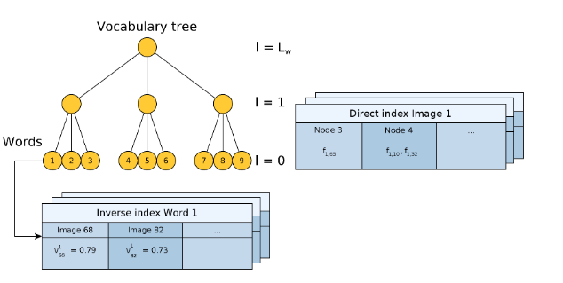
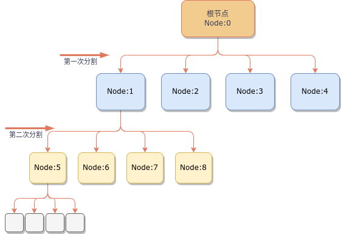
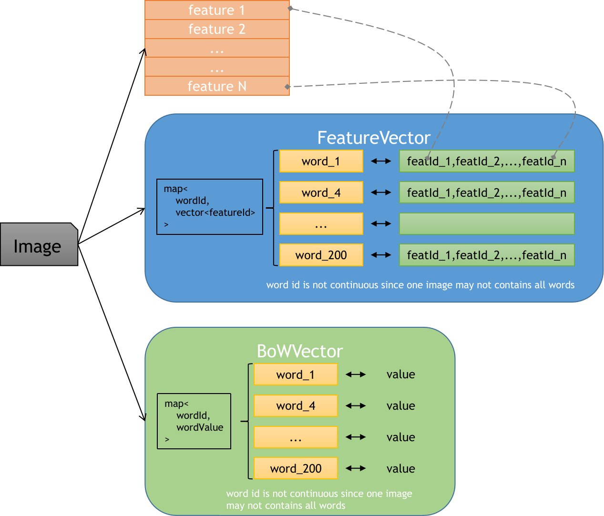
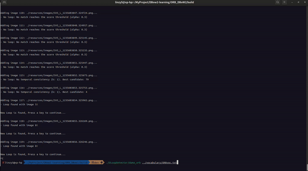

ORB-SLAM3保姆级教程——DBoW2从理论到实现
Bag of Words - 词袋模型
Bag of Words模型是信息检索领域常用的文档表示方法。简单来说，不同的单词可以组成一段文本，我们不考虑这些单词出现的频率，那么这段文本就可以用这些单词出现的频率直方图表示。这些单词就是Words，直方图就是Bag of Words。
举个例子
（来自维基百科Bag of Word）：
文本1：John likes to watch movies. Mary likes movies too 文本2：John also likes to watch football games.
词典：["John", "likes", "to", "watch", "movies", "also", "football", "games", "Mary", "too"]
那么这两段文本的Bag of Words就是： 文本1的Bag of Words：[1, 2, 1, 1, 2, 0, 0, 0, 1, 1] 文本2的Bag of Words：[1, 1, 1, 1, 0, 1, 1, 1, 0, 0] 其中的数字表示对应位置单词出现的次数
单词数量过多问题
如果文本中的单词数量过多，那么Bag of Words的向量就会非常稀疏，而且向量长度会非常大。这样的话，就会导致计算距离的时候，计算量非常大。因此，需要对单词进行聚类，将相似的单词聚类到一起，这样就可以减少单词的数量。
一个最简单的处理方法是使用哈希表（Hashing），将单词通过哈希映射到一个固定的长度的向量中。这样的话，就可以将单词的数量控制在一个固定的长度。但是这样的话，就会导致相似的单词被哈希到不同的位置，这样的话，相似的单词就无法聚类到一起了。
图像的Bag of Words
Bag of Word模型是文本检索中一个很常用的模型。在图像检索中，也可以使用这个模型。但是图像和文本有很大的不同，文本本身可以看作是一个离散信号，由不同的单词组成;但是图像是一个二位矩阵，没法直接当作一些元素的集合。因此，图像的Bag of Words模型需要经过一些处理才能够使用。
简单来说，通过一些特征提取算法，可以将图像中的特征点提取出来，然后将这些特征点当作单词，就可以使用Bag of Words模型了。
图像Bag of Words词汇表的构建
通过离线对一大批数据进行特征点提取之后会得到非常多的特征点和特征描述符。通过对这些描述符进行K-mean/K-means++聚类，可以得到一批中心点，称为nodes。在进行聚类的过程中因为求平均，会导致如果特征描述符是二值向量的话，会导致聚类中心点的二值向量不是0或1，而是浮点数。这样的话，就需要对这些中心点的值进行二值化，得到nodes。这些nodes就是Bag of Words中的words。也就是词汇。
那么Bag of Words就是图像特征点集在这些词汇的频率直方图（或者说频率向量）
具体来说，新来一个图片，进行特征点提取之后，对于每个特征点，计算其与nodes中的每个node的距离，找到最近的node，然后将这个node的索引作为这个特征点的word。这样就得到了这张图片的word的集合。然后对这个集合进行直方图统计，就得到了这张图片的Bag of Words。
词汇权重
不同的单词所包含的信息量是不同的，比如frequency这个词就比the这个词更有区分度，应该赋予这些高区分度的单词更大的权重，反之亦然。下面介绍几种常用的权重计算方式。
Term-Frequency : TF
Term Frequency(TF) :
\[w_i^{TF} = \frac{n_{id}}{n_d}\]
其中
- \(n_{id}\) : number of occurrences of word \(i\) in document \(d\),
- \(n_d\) : number of words in document \(d\).
直观含义：某个特征在当前图片中出现的频率
Inverse Document Frequency : IDF
Inverse document frequency (IDF):
\[w_i^{IDF} = log(\frac{N}{N_i})\]
其中
- \(N\): number of documents
- \(N_i\): number of documents containing word \(i\).
直观含义：某个特征在数据集中出现的频次
TF-IDF
这是使用比较多的权重计算方式，也是在DBoW2中的默认权重计算方式
Term Frequency – Inverse Document Frequency
\[w_i = \frac{n_{id}}{n_d} log(\frac{N}{N_i})\].
直观含义：在整个数据集中频繁出现的词汇，比如说the（在图像中则是频繁出现的特征）区分度较小，权重应该降低。但是如果某个单词在文档中频繁出现，那么这个单词的权重应该变大
通过tf-idf的加权，那些较少出现的特征，即更有辨识度的特征就会占据更大的权重。
相关的权重定义在DBoW初始版本的README中有说明
词典及词汇树创建
所谓词典，就是从大量的特征描述符中聚类得到的nodes。这些nodes就是Bag of Words中的words。也就是词汇。这些词汇代表了图像中较为有代表性的特征。
Bag of Words中传统意义上的词典并不具有树结构，只是一些词汇（特征）的集合。但是在DBoW2中，词典是具有树结构的。这样的话，可以通过树结构来加速搜索。树只是用来加速搜索的，树的所有叶子节点的集合才是词典。叶子节点也叫words.
创建词汇树
最终要构建出如下的词汇树

论文中关于构建词汇树是这样描述的：
To build it, we extract a rich set of features from some training images, independently of those processed online later. The descriptors extracted are first discretized into kw binary clusters by performing k-medians clustering with the k-means++ seeding [22]. The medians that result in a non binary value are truncated to 0. These clusters form the first level of nodes in the vocabulary tree. Subsequent levels are created by repeating this operation with the descriptors associated to each node, up to Lw times.
论文中的描述与图中的描述有些歧义。图中的叶子节点是level 0。但是在上面这段描述中的意思是自顶向下，node 0是根节点，依次往下聚类。这样的话，叶子节点的层级应该是level Lw。这里的Lw是level word的意思。也就是词汇树的层级。\(k_w\)是每个节点的子节点的个数。
在代码实现中，实际的构建顺序其实是下图这样子：

创建词典
创建词典的过程实际上只是遍历词汇树，并把所有叶子节点收集起来。
计算单词权重（即叶子节点权重）
这里之以默认的权重计算方式TF-IDF为例。TF-IDF的计算方式在上面已经有说明。在创建词典的时候，只能够先计算IDF项，TF项是当使用这个词典，对一张图片进行Bag of Words的时候才能够计算出来。
再次复习，IDF中的N是所有的图片的数量，N_i是包含这个词汇的图片的数量。
因此，计算IDF的时候也需要利用第一步创建的词汇树，统计每个叶子节点的图片数量。具体的计算过程可以如下：
1 | for each image: |
词典及词汇树的保存
DBoW2对词典和词汇的保存直接使用的是YAML结构，同时利用cv:FFileStorage来进行读写，可以直接保存压缩文件。生成的词典和词汇树文件如下
1 | %YAML:1.0 |
上面有几点值得注意：
- 由于上文提到的创建词汇树时候的遍历顺序问题（实际上即不是广度优先也不是深度优先遍历），因此会出现根节点的最后一个子节点，也就是上面的
nodeId:9的子节点的序号特别大，这个序号是根据遍历顺序来的，而不是根据树的结构来的。 - 特征描述符（以ORB特征为说明）在DBoW2中的类型是
cv::Mat, type = CV_8UC1的矩阵，一个ORB特征一共256bit,因此保存的时候使用32个unsigned char来保存。可以看到上面的descriptor字段是一串32个数字，每个数字在0-255之间 - 只有叶子节点（也就是
word）才有权重，其他的权重都是0
添加图片到数据库
添加图片到数据库的过程可以理解成在实时运行时，对新增的图片计算Bag of Words，同时要计算所谓Direct index和Inverted index。
Inverted index存储的是每个word对应的图片的索引。当一个新的图片被送进来计算Bag of Words时，就可以得到该图像每个word中包含的其他图片的索引。这样可以大大加速搜索。
Direct index存储的是每个图片的word中包含的特征点的索引。主要是用来做特征点匹配加速使用。当一帧图像\(I_t\)被送进来，并通过某种方式（上一帧或者回环检测）得到其对应的图片\prime{I_t}的时候，就可以通过Direct index找到这两帧图像中相同word中包含的特征点，在这些特征点之间再进行检索和匹配会比直接对所有特征点进行距离计算、匹配要快很多。
通过特征集合计算Bag of Words
实际上更准确的描述是特征集合转Bag of Words。需要先用特征点检测器提取特征点，然后用特征描述器计算特征描述符。然后对这些特征描述符进行Bag of Words。
每一个特征可以通过词汇树找到最终的一个node，这个node的投票加1。对所有特征执行这个操作这后就得出了words的直方图。这个直方图就是Bag of Words。
这里的特征集合是指一张图片中的所有特征点的描述子。
具体的过程其实很简单：
- 对于每个特征点，找到其对应的
node，也就找到了这个特征点的word。 - 收集该
word的权重，并在BoW vector的对应位置上加上这个权重。 - 遍历完所有的特征点之后，对
BoW vector进行归一化，归一化后的vector就是这张图片的Bag of Words。
实现中的TF-IDF权重的计算方式
IDF的计算在上面已经有说明，每个word的IDF在词典构建的时候就已经确定了。至于TF项，也就是某个word在某张图片中出现的频率，并没有被显式的计算出来。而是在计算BoW vector的时候，直接对每个feature的word的权重进行累加。这样的话，后续再进行一次归一化，BoW vector中的每个word的权重就是TF-IDF
数据库的存储结构
数据库的存储结构在词典/词汇表的存储结构后面添加了一个database字段
1 | %YAML:1.0 |
使用数据库检索相似图片及特征点匹配
图像检索
过程可以拆解成两个步骤：
- 计算
Bag of Words，得到BoW vector，记为\(v_t\)（注意，\(v_t\)的长度为词汇表的长度，也就是词汇树叶子节点的个数） - 从数据库中检索与该
BoW vector距离最近的图片
但是实际上，由于有了Inverse index，可以直接从Inverse index拿到\(v_t\)中每一个word对应的图片的索引。这样就可以直接从数据库中拿到这些图片，然后再计算这些图片与\(v_t\)的距离，找到最近的图片。实际计算步骤如下：
1 | image_value: map<ImageId, RelavantCoefficient> |
这里唯一比较奇怪的是权重的计算。理论上计算BoW vector的距离计算是这样的（以L1距离为例）：
\[ d(v_t, v_q) = ||v_t - v_q||_1 = \sum_{i=1}^{N} |v_t[i] - v_q[i]| \]
这样计算出来的分数在0-2之间，0代表最好，2代表最差。但是在DBoW2为了将最后的分数控制在0-1之间，并且0表示最差，1表示最好，因此对上面的距离计算进行了一些变换：
首先，L1距离可以写成如下形式：
（当然，这个转换的前提是\(v_t\)和\(v_q\)都是经过归一化的）
\[ d(v_t, v_q) = ||v_t - v_q||_1 = 2 + \sum_{i=1}^{N} |v_t[i] - v_q[i]| - |v_t[i]| - |v_q[i]| \]
将距离的计算拆成两个步骤：
\[ \begin{split} &d^1(v_t, v_q) = \sum_{i=1}^{N} |v_t[i] - v_q[i]| - |v_t[i]| - |v_q[i]| ,\quad [-2 \ best\ ...\ 0 \ worst]\\ &d(v_t, v_q) = - 0.5 * d^1(v_t, v_q), \quad[0\ worst\ ...\ 1\ best] \end{split} \]
特征点匹配
对于图片\(I_q\)和\(I_d\), (q for query && d for destination)，分别拥有特征集合\(F_q = \{f_i, i\in N_q\}\)和\(F_d = \{f_j, j\in N_d\}\)。其中\(N_q\)和\(N_d\)分别是两张图片中特征点的个数。\(f\)为特征描述子，对于ORB特征来说，\(f\in \mathbb{ [ 0,1 ] }^{256}\)。不管是什么特征描述子，传统的进行特征点匹配的做法大概有两种：
- Exhaustive : 对于每个\(f_i\)，计算其与\(F_d\)中所有\(f_j\)的距离，找到最近的\(f_j\)，如果这个距离小于某个阈值，就认为这两个特征点匹配。这种方法的缺点是计算量大，因为需要对\(F_d\)中的所有特征点进行距离计算。
- Flaann: 先对\(F_d\)构建
KD-tree，然后对于每个\(f_i\)，在KD-tree中搜索最近的特征点。一般来说会用flann(Fast Library for Approximate Nearest Neighbors)来加速KD-tree构建和搜索。在论文中作者也对这种方法进行了实验，实际上的效率由于构建KD-tree的额外耗时，flann方法的效率并没有比
在DBoW2中，为了加速特征点匹配的搜索过程，在图像加入数据库的时候，额外保存该图像的每个word所对应的特征点集合，称做所谓的direct index。这样的话，当进行两张图像的特征点匹配的时候，只需要对两张图像逐一遍历word，对两张图片中该word所包含的特征点进行__Exhaustive__的特征点匹配，就可以找到匹配的特征点。由于每个word中包含的特征数量都很有限，因此可以大大提升特征点匹配的效率。
这里比较值得学习的是代码中的数据结构的设计。在DBoW2中，主要用来存储一个图片的数据结构有以下几种

特征点匹配的步骤在DBoW2中，主要是用来当通过BoW vector及一些其他手段检索出__一张__分数最高的候选图片之后，再对这个候选图片进行特征点匹配。通过图片之间的匹配特征点集，可以计算两者的基础矩阵（Fundamental Matrix）。具体怎么算基础矩阵后文再详细讲解，本小节先重点讲解特征点匹配的过程。
特征点匹配算法
输入
- 图片\(I_1\),\(I_2\)为两张待做特征点匹配的图片
- \(F_1\),\(F_2\)为两张图片的特征集合，\(F_1 = \{f_i, i\in N_1\}\)，\(F_2 = \{f_j, j\in N_2\}\)
- \(D_1\),\(D_2\)为两张图片的
direct index，里面存储各个word包含的特征id
输出
- \(M\)为两张图片的匹配特征点集合，\(M = \{m_k, k\in N_m\}\)，\(m_k = (i, j)\)，\(i\)为图片1中的特征id，\(j\)为图片2中的特征点id;\(N_m\)为匹配特征点的个数
步骤
1 | for d1,d2 in (D1,D2): |
使用DBoW2做回环检测
回环检测是在DBoW2作者的另外一个仓库DLoopDetector中实现的。DLoopDetector利用DBoW2库做Bag of word构建，同时利用Direct Index加速特征点匹配，用匹配后的特征点对求解基础矩阵，从而判断找到图像是否符合物理约束，即求解出来的基础矩阵应该能够使特征点重投影误差很小，这个步骤叫做geometric verification。
做回环检测的时候本质上就是找到一个相似图片，但是为了保证准确率足够高（需要接近100%，因为回环检测如果错误那么整个轨迹都会乱掉。当然，召回率就可以不需要这么高。简单说来就是可以检测不出来，但是检测出的必须得正确）。为了达到这么高的准确率，在回环检测的时候还用到了一些特殊处理方法用来筛选候选的回环匹配帧：
分数归一化
使用当前帧与上一帧的分数作为分母，归一化候选帧的分数。归一化分数的原因是BoW vector的距离计算受各种条件影响比较大，使用归一化后的分数可以方便确定一个统一阈值。在实际中，为了计算当前帧与上一帧的匹配分数，是通过缓存上一帧的BoW vector进行实现的。设定的阈值一般不大，默认是0.3。
候选帧聚合
将检索到的一批候选帧按照帧序号进行“聚合”，论文中叫做“island”。也就是将相近序号的帧聚合在一起，当前后两帧间距小于阈值时认为属于同一个island，当聚合的帧数足够才认为这是一个合格的候选“island”。每个island的分数为其中所有帧的分数之和。挑选分数最大的island作为最终的匹配island。同时，该island中最大分数的帧为匹配的帧。
时间连续一致性
检查island与上一帧的候选island的时间连续性。当前的匹配结果\(<v_t,V_{T\prime}>\)与上一帧的匹配结果\(<v_{t-\Delta t},V_{T_1}>\)应该满足\(V_{T\prime}\)与\(V_{T_1}\)是非常接近或者有重叠的。
算法步骤
- 计算当前帧\(v_t\)的
BoW vector，记为\(v_t\) - 从数据库中检索与\(v_t\)距离最近的__一批图片__，记为\(V\)
- 计算\(v_t\)与\(V\)中所有候选帧的归一化分数，并去除阈值之下的帧，记为\(V^\prime\)
- 对\(V^\prime\)中的帧按照帧序号进行聚合，并找到分数最高的
island，记为\(V^\prime_{best}\) - PS:在代码中，时间连续一致性似乎没有起到作用
- 将
island中分数最高的帧作为候选帧，并进行geometry verification，如果通过则认为找到了回环帧
代码及实操
DBoW2中的回环检测器的代码放置在DLoopDetector。实际运行的时候，需要先解决一下依赖问题，可能还有一些bug需要修复。但是一个没法忍受的点是，DBoW2默认的词典保存格式是yml，在读取DLoopDetector提供的词典文件的时候，花费了几个小时还没有读取结束。在ORB_SLAM中，作者将词典保存为txt格式，这样读取起来非常快，只需要花费几秒。
笔者将DBoW2和DLoopDetector打包，并修复依赖问题及一些bug,可以直接使用。代码链接
改进点：
- 从txt中读取字典
- 修复了DLoopDetector中的一些bug
- 将DBoW2,DLib,DLoopDetector整合到一个工程中，避免依赖问题和编译问题
- 整个项目只需要依赖OpenCV
- 在DLoopDetector提供的
demo_brief.cpp基础上，增加了demo_orb.cpp，并提供字典可以直接运行检验结果
运行效果：
